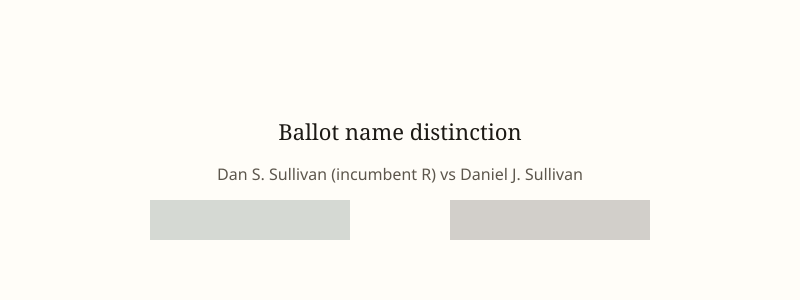

Alaska · election law · 24 October 2026
The Justice Department sued Alaska to block certification of the Senate race if the Republican incumbent loses by a margin smaller than the votes for a same-named candidate.

What is agreed across desks
On 22 October 2026 the United States Department of Justice filed a complaint in the United States District Court for the District of Alaska against the State of Alaska, its Division of Elections director, and election boards. The complaint seeks declaratory and injunctive relief concerning the 3 November 2026 election for the United States Senate seat currently held by Dan S. Sullivan.
The complaint names as a co-candidate Daniel J. Sullivan Jr., a retired teacher who appears on the ballot. It alleges that the inclusion of this candidate creates a risk of voter confusion. It asks the court to bar certification of any result in which Senator Sullivan does not win and in which reallocating every vote cast for Daniel J. Sullivan to Senator Sullivan under Alaska’s ranked-choice process would have produced a win for the senator. In that circumstance the department requests a delay in certification pending an investigation into whether the votes for the second Sullivan were intended for the first.
President Trump told reporters on 23 October that he directed the department to file the suit. A department spokesperson stated that Alaska’s Division of Elections had determined the candidacy of Daniel J. Sullivan was intended to mislead voters. Reuters, AP, Axios, NBC, CNN, and Votebeat all reported the filing date, the named parties, the ranked-choice mechanism, and the conditional nature of the requested relief. The race is between incumbent Republican Dan S. Sullivan and Democrat Mary Peltola; polls have described it as close.
What is only a quote
The complaint’s assertion that the sole purpose of Daniel J. Sullivan’s candidacy is to benefit the Peltola campaign is an allegation. The candidate has denied intent to mislead. Statements that the candidacy is “frivolous” or a “disgrace” are characterizations by officials or the president; they are not findings of fact by a court. Claims that the lawsuit is part of a broader strategy to contest midterm results are interpretive. Legal scholars quoted in Votebeat and elsewhere have said the suit appears unlikely to succeed; that assessment is expert opinion, not a ruling.
Mechanism a reader needs
Alaska uses ranked-choice voting for federal races. Voters rank candidates. If no candidate receives a majority of first-choice votes, the lowest-ranked candidate is eliminated and those ballots are redistributed according to the next ranking. The process continues until a candidate has a majority. The DOJ’s requested remedy contemplates a counterfactual in which every ballot that listed Daniel J. Sullivan as a first choice is treated as if it had listed Senator Sullivan instead, then the ranked-choice rounds are re-run. That counterfactual is not the actual count the state will perform.
Certification is the final administrative act that makes an election result official for purposes of seating a senator. Federal courts generally defer to state election procedures unless a clear violation of federal statute or the Constitution is shown. The National Voter Registration Act is cited in the complaint; its provisions concern voter registration lists more directly than candidate-name similarity. Whether a same-name candidate on the ballot constitutes a federal violation that justifies preemptive interference with certification is the legal question the court must decide. Early voting is already under way.
Name similarity is not new in American elections. State election officials routinely list candidates with party affiliation and incumbent status to reduce confusion. In this case the state listed Daniel J. Sullivan without a party label while labeling the senator as “Registered Republican” and “incumbent.” The department’s suit treats that distinction as insufficient. The court will decide whether additional remedies are required before any votes are counted or only after a close result appears.
What this story is not
It is not a finding that any votes have already been cast in error. It is not a court order. It is not evidence that Daniel J. Sullivan entered the race at the direction of any campaign. The photograph above is a stock exterior of the Alaska State Capitol; it is not a picture of the federal courthouse in Anchorage where the case was filed or of any polling place.

Source articles and scores
Images: Wikimedia Commons type photograph of Alaska State Capitol linked via Special:FilePath. Caption states it is not the event. onerror falls back to committed SVG. No CORS attribute.